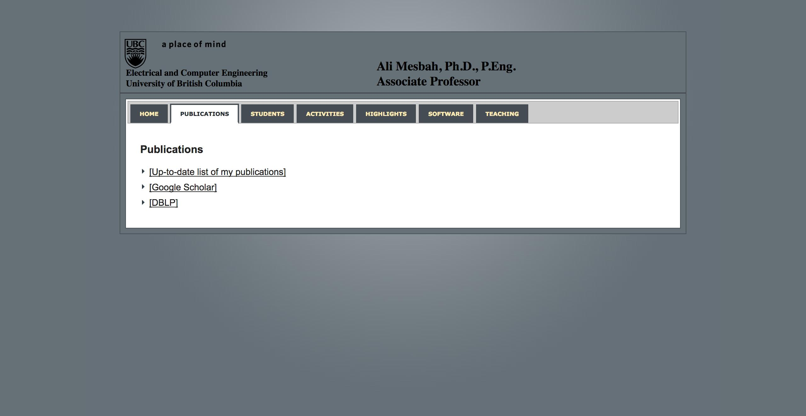

Captured DOM
<html><head>
<title>Ali Mesbah</title>
<link href="style/imageFrame.css" rel="stylesheet" type="text/css">
<!--[if lt IE 7]>
<link type="text/css" href="style/imageFrame_ie6.css" rel="stylesheet" />
<![endif]-->
<link href="style/imageFrame_rounded_tl.css" rel="stylesheet" type="text/css">
<link href="style/jquery-ui-1.8.6.custom.css" rel="stylesheet" type="text/css">
<script type="text/javascript" async="" src="http://www.google-analytics.com/ga.js"></script><script src="js/jquery.min-1.4.3.js"></script>
<script src="js/jquery-ui.min-1.8.6.js"></script>
<script type="text/javascript" src="js/jquery.ifixpng.js"></script>
<script type="text/javascript" src="js/jquery.imageFrame.js"></script>
<script>
$(function() {
var ranTime = new Date().getTime();
$("#pubs").attr('href', $("#pubs").attr('href') + '?ran=' + ranTime);
$("#teaching").attr('href', $("#teaching").attr('href') + '?ran=' + ranTime);
$("#students").attr('href', $("#students").attr('href') + '?ran=' + ranTime);
$("#highlights").attr('href', $("#highlights").attr('href') + '?ran=' + ranTime);
$("#activities").attr('href', $("#activities").attr('href') + '?ran=' + ranTime);
$("#software").attr('href', $("#software").attr('href') + '?ran=' + ranTime);
$( "#tabs" ).tabs({
ajaxOptions: {
error: function( xhr, status, index, anchor ) {
$( anchor.hash ).html(
"Couldn't load the content!");
}
}
});
$.ifixpng.pixel = 'images/pixel.gif';
$.imageFrame.defaultFrameStyle = 'soft';
$( "#mypic" ).imageFrame();
});
</script>
<script type="text/javascript">
var _gaq = _gaq || [];
_gaq.push(['_setAccount', 'UA-1798257-7']);
_gaq.push(['_trackPageview']);
(function() {
var ga = document.createElement('script'); ga.type = 'text/javascript'; ga.async = true;
ga.src = ('https:' == document.location.protocol ? 'https://ssl' : 'http://www') + '.google-analytics.com/ga.js';
var s = document.getElementsByTagName('script')[0]; s.parentNode.insertBefore(ga, s);
})();
</script>
</head>
<body style="font-size:62.5%;">
<div id="container">
<div class="tabbed_area">
<div class="pane-north">
<div class="head">
<a href="http://www.ece.ubc.ca"><img style="vertical-align:middle;" src="images/ubcblack_basic.png" width="160px" border="0"></a>
<div class="name" id="myname">Ali Mesbah, Ph.D., P.Eng. Associate Professor</div>
<div class="aff">Electrical and Computer Engineering University of British Columbia</div>
</div>
</div>
</div>
<div class="tabbed_area">
<div id="tabs" class="ui-tabs ui-widget ui-widget-content ui-corner-all">
<ul class="ui-tabs-nav ui-helper-reset ui-helper-clearfix ui-widget-header ui-corner-all">
<li class="ui-state-default ui-corner-top"><a href="#home"><span>Home</span></a></li>
<li class="ui-state-default ui-corner-top ui-tabs-selected ui-state-active"><a href="#ui-tabs-1" id="pubs"><span>Publications</span></a></li>
<li class="ui-state-default ui-corner-top"><a href="#ui-tabs-2" id="students"><span>Students</span></a></li>
<li class="ui-state-default ui-corner-top"><a href="#ui-tabs-3" id="activities"><span>Activities</span></a></li>
<li class="ui-state-default ui-corner-top"><a href="#ui-tabs-4" id="highlights"><span>Highlights</span></a></li>
<li class="ui-state-default ui-corner-top"><a href="#ui-tabs-5" id="software"><span>Software</span></a></li>
<li class="ui-state-default ui-corner-top"><a href="#ui-tabs-6" id="teaching"><span>Teaching</span></a></li>
</ul>
<div id="home" class="ui-tabs-panel ui-widget-content ui-corner-bottom ui-tabs-hide">
<table>
<tbody><tr>
<td valign="top">
<p>I am an Associate Professor in the department of Electrical and Computer Engineering (<a href="http://www.ece.ubc.ca">ECE</a>) at the University of British Columbia (<a href="http://www.ubc.ca">UBC</a>). At UBC, I lead the <a href="http://salt.ece.ubc.ca">Software Analysis and Testing (SALT) lab</a>. You can reach me at <a href="mailto:amesbah@ece.ubc.ca">amesbah@ece.ubc.ca</a></p>
<p>
My research is in software engineering, with emphasis on software analysis and testing of modern web-based and mobile systems. I am also interested in software maintenance and evolution, fault localization and repair, program comprehension, and empirical software engineering.
</p>
<p>
</p><div class="ticker-wrapper">
<div id="ticker-title"><span style="display: inline; ">News</span></div><br>
<div class="ticker">
<ul class="niceList">
<li>
<b>Openings: Post-doc and two PhD positions. For more details, visit <a href="http://salt.ece.ubc.ca/open-positions/">this page</a>. </b>
</li>
<li>
I'll be serving on the Program Committees of <a href="http://conf.researchr.org/home/icse-2018">ICSE'18</a>, <a href="http://www.ase2017.org/">ASE'17</a>, <a href="http://esec-fse17.uni-paderborn.de">ESEC/FSE'17</a>, <a href="http://icse2017.gatech.edu/">ICSE'17</a>, <a href="http://aster.or.jp/conference/icst2017/">ICST'17</a>, and <a href="http://conf.researchr.org/home/issta-2017">ISSTA'17</a>
</li>
<li>Paper <a href="http://salt.ece.ubc.ca/publications/amin_icst17.html">"JavaScript: The (Un)covered Parts"</a> accepted to ICST'17</li>
<li>Paper <a href="http://salt.ece.ubc.ca/publications/quinn_fse16.html">"Discovering Bug Patterns in JavaScript"</a> accepted to FSE'16</li>
<li>NSERC Discovery Accelerator Supplements (<a href="http://www.nserc-crsng.gc.ca/Professors-Professeurs/Grants-Subs/DGAS-SGSA_eng.asp">DAS</a>) Award 2016.
One of 125 chosen from around 3,000 NSERC Discovery applicants across all science and engineering fields in Canada.
</li><li><a href="http://saner.inf.usi.ch/fose">Leaders of Tomorrow: Future of Software Engineering</a>, invited paper and talk titled,
<a href="http://salt.ece.ubc.ca/publications/saner16.html">Software Analysis for the Web: Achievements and Prospects</a>.
</li>
</ul>
</div>
</div>
<p></p>
<div align="center"><a href="http://salt.ece.ubc.ca"><img style="vertical-align:middle;" src="images/SALT-logo.png" width="250px" border="0"></a></div>
<!-- <h4>Attention</h4>
There are currently a number of <b>MSc and PhD positions</b> available in our lab. Cutting-edge research on web application analysis, in close collaboration with industry. Interested? Drop me an email!
SALT Lab is always interested in motivated, bright students to work with on a variety of exciting software engineering projects. Interested candidates may refer to the <a href="http://salt.ece.ubc.ca/content/prospective-students">SALT Lab's website</a> for additional information on how to apply. -->
</td>
<td width="20%" valign="top" align="center">
<span class="frame frameSoft" style="display: inline-block; clear: none; float: none;"><span class="frameBuffer" style="display: inline-block; float: none;"><img id="mypic" src="images/S01_1840_2.jpg" style="float: none;"><span class="tl"></span><span class="t"><span></span></span><span class="tr"></span><span class="r"><span></span></span><span class="br"></span><span class="b"><span></span></span><span class="bl"></span><span class="l"><span></span></span></span></span>
<a href="mailto:amesbah@ece.ubc.ca">amesbah@ece.ubc.ca</a>
<div><br>
Phone: 1-604-827-4249<br>
Office: Kaiser, Room 4044<br>
Address: 2332 Main Mall, Vancouver, BC, Canada V6T 1Z4<br>
</div>
<br><br>
<!--
<div align="center">
<a class="twitter-timeline" href="https://twitter.com/amesbah" data-widget-id="445761481527685120">Tweets by @amesbah</a>
<script>!function(d,s,id){var js,fjs=d.getElementsByTagName(s)[0],p=/^http:/.test(d.location)?'http':'https';if(!d.getElementById(id)){js=d.createElement(s);js.id=id;js.src=p+"://platform.twitter.com/widgets.js";fjs.parentNode.insertBefore(js,fjs);}}(document,"script","twitter-wjs");</script>
</div>
-->
<p>
</p></td>
</tr>
</tbody></table>
</div><div id="ui-tabs-1" class="ui-tabs-panel ui-widget-content ui-corner-bottom"><h3>Publications</h3>
<p>
</p><ul class="niceList">
<li><a href="http://salt.ece.ubc.ca/publications/" target="_blank">[Up-to-date list of my publications]</a>
</li>
<li><a href="http://scholar.google.com/citations?user=6CdatVEAAAAJ&hl=en" target="_blank">[Google Scholar]</a>
</li>
<li><a href="http://www.informatik.uni-trier.de/~ley/pers/hd/m/Mesbah_0001:Ali.html" target="_blank">[DBLP]</a>
</li>
</ul>
<p></p>
</div><div id="ui-tabs-2" class="ui-tabs-panel ui-widget-content ui-corner-bottom ui-tabs-hide"></div><div id="ui-tabs-3" class="ui-tabs-panel ui-widget-content ui-corner-bottom ui-tabs-hide"></div><div id="ui-tabs-4" class="ui-tabs-panel ui-widget-content ui-corner-bottom ui-tabs-hide"></div><div id="ui-tabs-5" class="ui-tabs-panel ui-widget-content ui-corner-bottom ui-tabs-hide"></div><div id="ui-tabs-6" class="ui-tabs-panel ui-widget-content ui-corner-bottom ui-tabs-hide"></div>
</div>
</div>
</div>
</body></html>